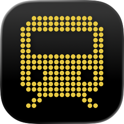
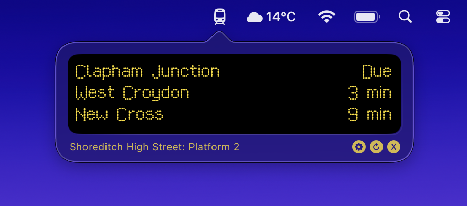
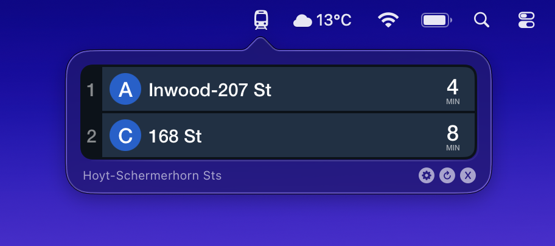

Free, real-time public transit arrival times for London, New York, Berlin, and more.


| London | Underground, Overground, DLR |
| UK | National Rail |
| New York | Subway |
| SF Bay Area | BART |
| Berlin | U-Bahn, S-Bahn, Tram |
...or any custom GTFS-RT feed
Also available in your CLI and on your Raspberry Pi – instructions on GitHub